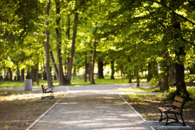
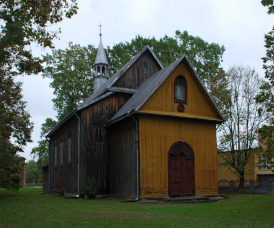
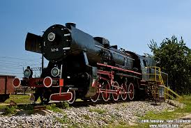
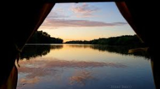

Opis wycieczki
Trasa rozpoczyna się w Kołodziejach (gmina Bojanów) i liczy około 78 kilometrów. Po drodze odwiedzimy ciekawe miejsca jak park podworski, drewniany kościół, Rozwadów z zabytkowym parowozem oraz malownicze tereny nad Sanem.
Atrakcje na trasie
- Park podworski w Bojanowie: Leśna atmosfera i ciekawa historia. 
- Drewniany Kościół w Zarzeczu: Zabytkowy obiekt sakralny z XVIII wieku. 
- Rozwadów: Historyczna dzielnica Stalowej Woli z parowozem Ty2-16. 
- Rzeka San: Możliwość odpoczynku i obserwacji przyrody. 
Informacje praktyczne
Nawierzchnia: asfalt i szuter.
Rower: trekkingowy lub gravel.
Czas przejazdu: około 4–5 godzin z przerwami.
Trasa typu pętla – start i meta w Kołodziejach.